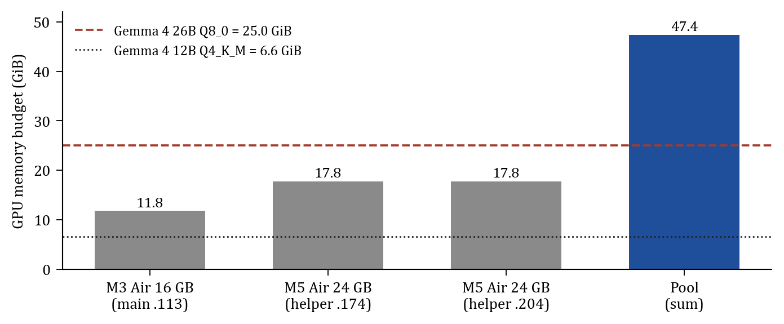
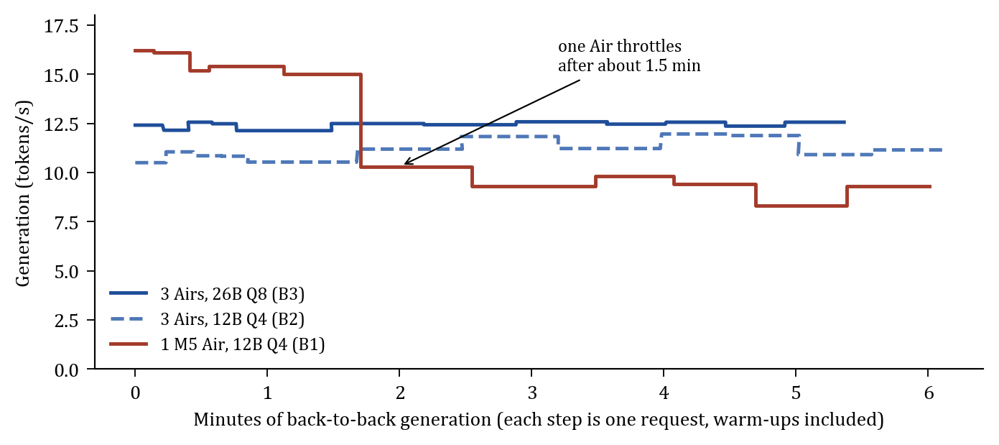
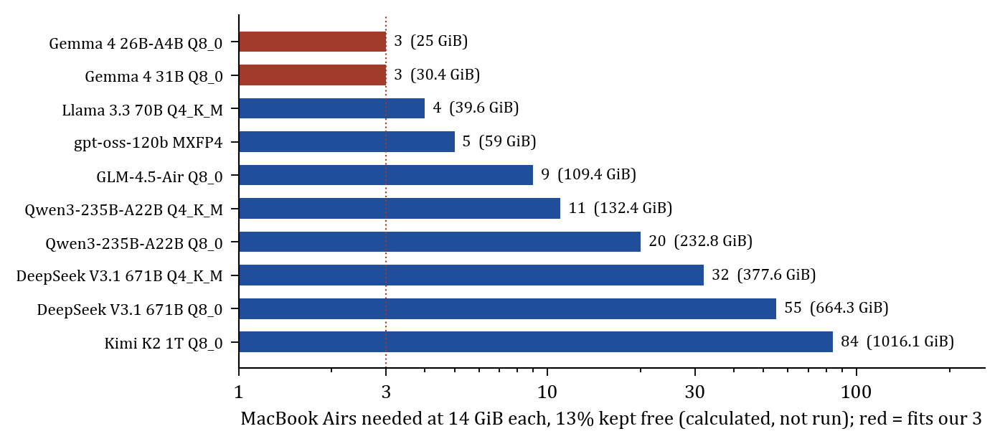
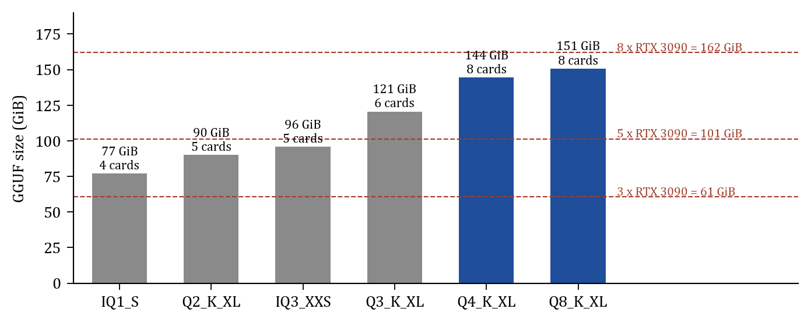

System built and measured by Ayo Awoyemi, Joseph Awoyemi and Preston Nnadi · Team Win, HackUTD 2026
Technical report v2 · November 8, 2026 · github.com/aayoawoyemi/hacktud_team_win
Authorship: AI agents working for the team (Anthropic's Claude) wrote this report and drew its figures, from the team's code, raw benchmark files and notes. The team built Oasis and ran every experiment. This is a proof-of-concept report from a hackathon and has not been peer reviewed. Sections 3 to 5 report measurements from one three-laptop prototype; Section 6 is calculated, not run.
Abstract. A language model runs only where its weights fit, and the offices that most need private AI rarely own a machine large enough. Oasis pools the computers an office already has into one inference server on a private, offline network. llama.cpp splits the model by layers across the machines, and a SpacetimeDB database holds every machine, heartbeat, command and pool state as a table, so the pool assembles itself without commands typed on the helpers. On three MacBook Airs, Oasis served Gemma 4 26B-A4B, a 25.0 GiB model 1.4 times larger than any one machine's GPU budget, at 12.5 tokens per second with 0.6 s to the first token. On a 12B model that one Air can hold, the pool sustained 10.8 to 11.9 tokens per second for 6 minutes, while a lone fanless Air throttled from 16.1 to 8.3 to 10.3. By calculation, eight used RTX 3090s would hold DeepSeek V4 Flash, a model that DeepSeek reports at 79.0% on SWE-bench Verified.
Gemma 4 26B-A4B at 8-bit precision occupies 25.0 GiB, and macOS lets the GPU of a 24 GB MacBook Air use 17.8 GiB, so the model does not run on that laptop at any speed. Renting the missing memory is costly because it is scarce: when AWS cut its H100 prices by 44% in June 2025, it noted that GPU demand "has outpaced industry-wide supply, making GPUs a scarce resource" [1].
Law firms and medical practices often cannot rent at any price, because client and patient records may not leave the building. Buying means a 32 GB RTX 5090, launched at USD 1,999 for the card alone [2], or, in one published plan for small businesses, about USD 10,000 of Mac Studios [3]. The same offices already own computers whose GPUs sit idle most of the day.
We built Oasis to turn those idle computers into one private inference server, and we tested it on the hardest case we had: three laptops serving a model that none of them can load.
Pooling consumer devices for inference is established, and Oasis builds on that work (Table 1). Most of these systems aim to make a cluster faster. EXO reaches a 3.2 times speedup on four Mac Studios by using tensor parallelism over Thunderbolt 5 [5], and prima.cpp runs 70B models on home devices over Wi-Fi [6]. Oasis instead aims for a pool that an office can trust and leave running. Its state lives in a database with enforced transitions, and its network has no route to the internet. Being offline is a requirement, because the llama.cpp RPC documentation warns: "Never run the RPC server on an open network or in a sensitive environment" [4].
| System | Split | Network | Control and state |
|---|---|---|---|
| llama.cpp RPC [4] | Layers, by free memory | TCP or RDMA | Manual flags per machine |
| EXO [5] | Pipeline or tensor | LAN, Thunderbolt 5 RDMA | Auto-discovery, topology-aware placement |
| prima.cpp [6] | Pipelined ring | Wi-Fi | Heterogeneity-aware scheduler (Halda) |
| distributed-llama [7] | Tensor, 2n nodes | Ethernet switch | Root node forwards weights |
| Petals [8] | Pipeline across volunteers | Internet | Public swarm |
| Oasis | Layers (llama.cpp RPC) | Private Ethernet, offline | SpacetimeDB tables and reducers |
Data plane. Oasis does no model arithmetic. Each helper runs llama.cpp's rpc-server, and the main
machine runs llama-server (build b8665), which gives every device a block of layers in proportion to its
free memory [4]. A token passes through the blocks in order, so memory adds across machines while each machine adds
one network hop. On our pool, the 25.0 GiB model split into 5,718 MiB on the 16 GB M3 and 9,941 MiB on each 24 GB M5,
with all 31 layers on GPU.
Control plane. Every piece of shared state is a table in a SpacetimeDB module written in Rust (Table 2), and
only reducers, which are transactional functions that validate input and roll back on error, can change a table [9].
An agent on each machine registers its hardware, sends a heartbeat every second and carries out the commands addressed
to it. The coordinator writes the split plan and the commands, then starts llama-server once every helper
reports a listening rpc-server. The pool moves from EMPTY through PLANNED, STARTING_HELPERS and LAUNCHING
to SERVING, and the database rejects any other path, so no client can mark the pool as serving before its helpers
exist. When a machine joins a serving pool, the coordinator returns the pool to PLANNED and restarts it with every
helper.
crates/control/src/lib.rs).| Table | Holds | Written by |
|---|---|---|
node | Each machine, its devices, memory and role | Agent |
heartbeat | Liveness and rpc-server status, every second | Agent |
command | Start or stop rpc-server on a named machine, and the outcome | Coordinator, then agent |
split_plan | Model and the machine assigned to each device slot | Coordinator |
cluster_status | Pool state (EMPTY to SERVING, DEGRADED, FAILED, STOPPED) | Coordinator |
event | Append-only history of joins, launches and failures | All |
model_request | A user's request to load a model | Dashboard |
Hardware. The test pool was one M3 MacBook Air with 16 GB (main: model file, database, coordinator,
llama-server) and two M5 MacBook Airs with 24 GB (helpers), whose GPU budgets were 11.8, 17.8 and 17.8 GiB.
They connected through a GL.iNet Opal travel router, a 5-port gigabit switch and USB-C Ethernet adapters, about
USD 140 in total, with no internet uplink. The median round trip between pairs was 0.44 to 0.94 ms over 20 probes each.
A benchmark tool streamed requests to llama-server with a 4,096-token context and model thinking
turned off. It sent each of three prompts once to warm up and three times to measure: short (34 prompt tokens,
128 generated), long (56 and 512) and edit, a rewrite of a 274-token passage (313 generated). We report medians of the
measured requests. The pool runs used flash attention, an 8-bit key-value cache and, for the 26B, --no-mmap;
the single-machine run used none of these flags.
Capacity. The 26B model fits only on the pool (Figure 1). Its weights exceed the M3's budget 2.1 times and each M5's 1.4 times, and the pool's 47.4 GiB holds them with 22.4 GiB to spare.

Speed. The pool served the 26B at 12.5 tokens per second, varying only from 12.1 to 12.6 over 12 requests and 5.4 minutes, and completed 9 of 9 measured requests (Table 3). On the 12B, a cold single Air was faster than the pool, 16.1 against 10.9 tokens per second, but after about 1.5 minutes it fell to 8.3 to 10.3 and stayed there, while the pool held 10.8 to 11.9 for 6.1 minutes (Figure 2). The Air has no fan, so we attribute the drop to thermal throttling, inferred from its timing; we did not log temperature.
| Run | Prompt | Generation (tok/s) | First token (s) | Prompt reading (tok/s) |
|---|---|---|---|---|
| 26B Q8_0, 3 Airs | short | 12.5 (12.2-12.6) | 0.60 | 57 |
| long | 12.5 (12.4-12.6) | 0.64 | 90 | |
| edit | 12.6 (12.4-12.6) | 1.85 | 177 | |
| 12B Q4_K_M, 3 Airs | short | 10.9 (10.8-11.1) | 0.59 | 60 |
| long | 11.2 (11.2-11.8) | 0.75 | 75 | |
| edit | 11.2 (10.9-11.9) | 4.65 | 59 | |
| 12B Q4_K_M, 1 M5 Air | short | 16.1 (15.2-16.1) | 0.33 | – |
| long | 10.3 (9.3-15.0) | 0.87 | – | |
| edit | 9.3 (8.3-9.4) | 3.74 | – |

Network and prompt cost. At 12.5 tokens per second a token takes 80 ms, and its two round trips to the helpers, under 1 ms each, cost at most about 2.5% of that. The 26B also read the 274-token edit prompt three times faster than the dense 12B, 177 against 59 tokens per second, probably because it activates only 3.8B of its 25.2B parameters per token [10].
Where pooling does not help. A model that already fits gains nothing: on Qwen2.5 0.5B, three Airs generated 31 to 45 tokens per second against 33 to 53 for one. n-gram speculative decoding sped a single Air up 1.6 to 1.7 times on the edit prompt and not at all on new text; we have not yet run it on the pool.
Pool memory grows with every machine, so model size sets the pool size. At 14 GiB per laptop, below our measured mean of 15.8, and 13% kept free for the key-value cache, 9 laptops hold GLM-4.5-Air at 8 bits and 32 hold DeepSeek V3.1 (671B) at 4 bits (Figure 3).

Old office desktops. The 26B we served scores 82.3 on GPQA Diamond and 82.6 on MMLU-Pro [10], against 65.0 and 78.0 for the October 2024 Claude 3.5 Sonnet [11]. Neither benchmark measures agentic coding, where Gemma 4 has no published SWE-bench score. Two or three desktops with old GPUs would hold it (Table 4).
| Desktop | PCs for Q4_K_M (15.8 GiB) | PCs for Q8_0 (25.0 GiB) | Upper-bound tok/s |
|---|---|---|---|
| 8 GB card (GTX 1070, GTX 1080) | 3 | 4 | ~30-60 |
| 11-12 GB card (GTX 1080 Ti, RTX 3060) | 2 | 3 | ~30-60 |
| No GPU, 32 GB DDR4 (24 GiB for the model) | 1 | 2 | ~6-12 |
Used RTX 3090s. DeepSeek V4 Flash has 284B parameters, 13B active per token, ships its experts in 4-bit precision and is MIT-licensed; DeepSeek reports 79.0% on SWE-bench Verified [12], against 77.2% that Anthropic reports for Claude Sonnet 4.5 [13]. Because the experts are already 4-bit, its 8-bit file is only 6.4 GiB larger than its 4-bit file, and eight 24 GB cards hold either one (Figure 4). Running it would need a llama.cpp build newer than our b8665, which predates DeepSeek V4 support (merged June 29, 2026 [14]).

| Limitation | Consequence | Remedy |
|---|---|---|
| Pool runs used flash attention and q8 KV; the single Air did not | The sustained comparison is indicative | Rerun the single Air with the same flags |
| Three measured requests per prompt, one network | Small samples | 30+ requests per configuration |
| Every token visits every machine | Speed does not grow with the pool | Measure tok/s against pool size |
One lost helper stops llama-server | Failure odds grow with the pool | Automatic re-plan on the survivors |
| Cold load of 303 s for 25 GiB | About an hour for 400 GB over gigabit | Weights cached on each helper (rpc-server -c) |
| RPC has no authentication | Safe only on a closed network | Authenticated, encrypted links |
| Only Macs tested | Windows and Linux office PCs untested | A mixed CUDA and Metal pool |
Three laptops and USD 140 of network gear served a 25.0 GiB model that none of them could load, at 12.5 tokens per second, with no internet connection. The result suggests that an office can wire its idle computers into one server for a model larger than any of them holds.
Reproducibility. Code and raw benchmark files: github.com/aayoawoyemi/hacktud_team_win, commit
d6bc20d. The 26B ran as llama-server --rpc 192.168.8.174:50052,192.168.8.204:50052 -ngl 99 -c 4096 -fa on -ctk
q8_0 -ctv q8_0 --no-mmap. whitepaper/build.py regenerates every figure and generated table from the
raw files and stops if any run number in the text differs from the data.
[1] Yun, C. (2025, June 5). Announcing up to 45% price reduction for Amazon EC2 NVIDIA GPU-accelerated instances. AWS News Blog.
[2] NVIDIA (2025, January 6). New GeForce RTX 50 Series graphics cards and laptops. nvidia.com/en-us/geforce/news.
[3] Hannecke, M. (2026, March 24). The $10K sovereign AI cluster: How SMBs run 100B+ models on Apple Silicon hardware. Medium.
[4] ggml-org. llama.cpp RPC backend, tools/rpc/README.md (added in pull request #6829, May 2024). github.com/ggml-org/llama.cpp.
[5] EXO Labs. exo. github.com/exo-explore/exo. Accessed November 8, 2026.
[6] Li, Z., et al. (2025). Prima.cpp: Fast 30-70B LLM inference on heterogeneous and low-resource home clusters. arXiv:2504.08791.
[7] b4rtaz. distributed-llama. github.com/b4rtaz/distributed-llama.
[8] Borzunov, A., et al. (2022). Petals: Collaborative inference and fine-tuning of large models. arXiv:2209.01188.
[9] Clockwork Labs. SpacetimeDB documentation: reducers. spacetimedb.com/docs/functions/reducers.
[10] Google. Gemma 4 26B-A4B model card. huggingface.co/google/gemma-4-26B-A4B.
[11] Anthropic (2024, October 22). Model card addendum: Claude 3.5 Haiku and upgraded Claude 3.5 Sonnet.
[12] DeepSeek-AI (2026). DeepSeek-V4-Flash model card. huggingface.co/deepseek-ai/DeepSeek-V4-Flash.
[13] Anthropic (2025, September 29). Introducing Claude Sonnet 4.5. anthropic.com/news/claude-sonnet-4-5.
[14] ggml-org. llama.cpp pull request #24162, "DeepSeek V4", merged June 29, 2026.